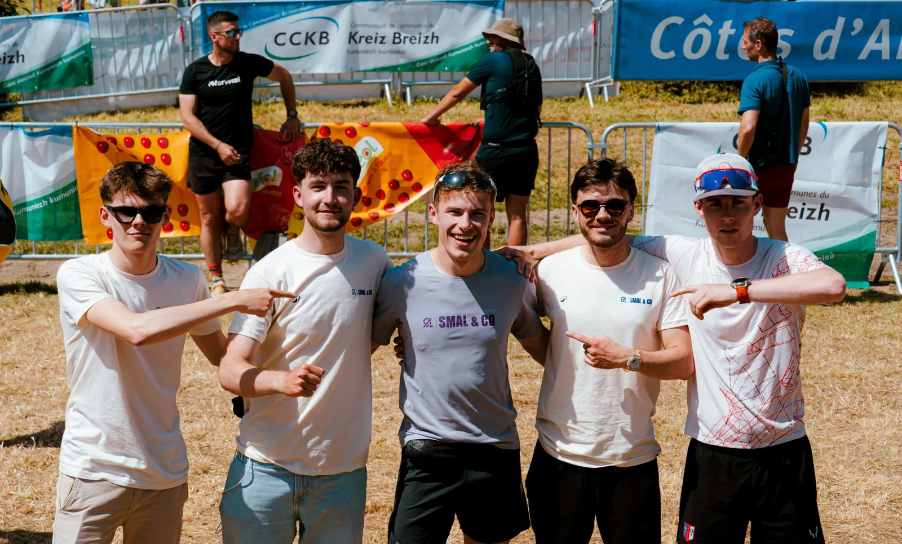
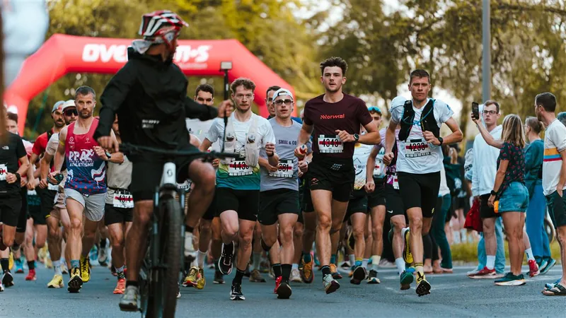
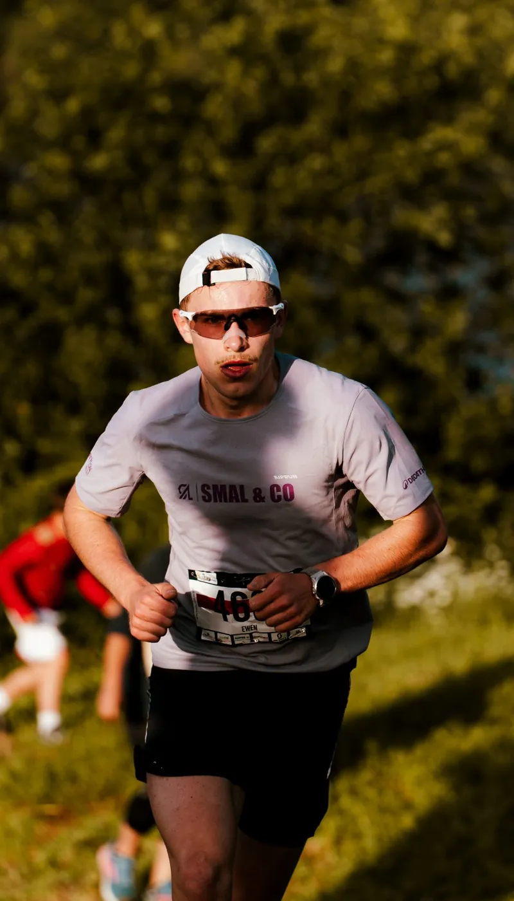
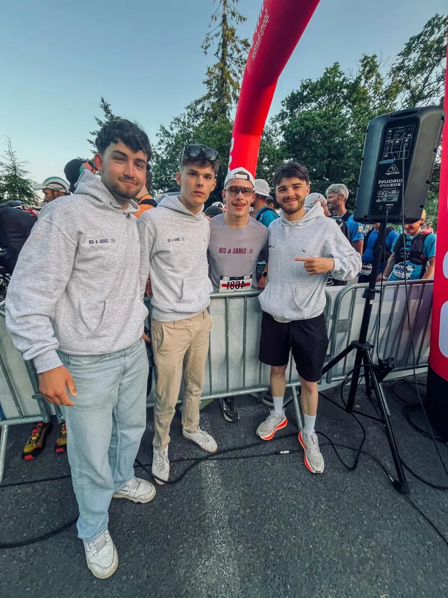
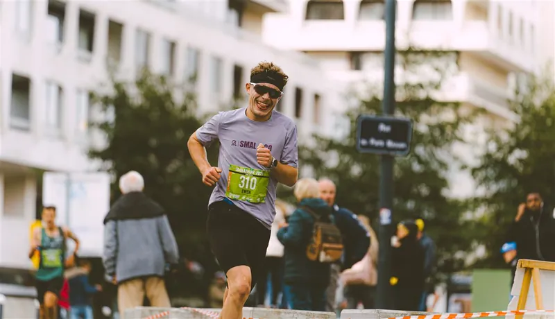
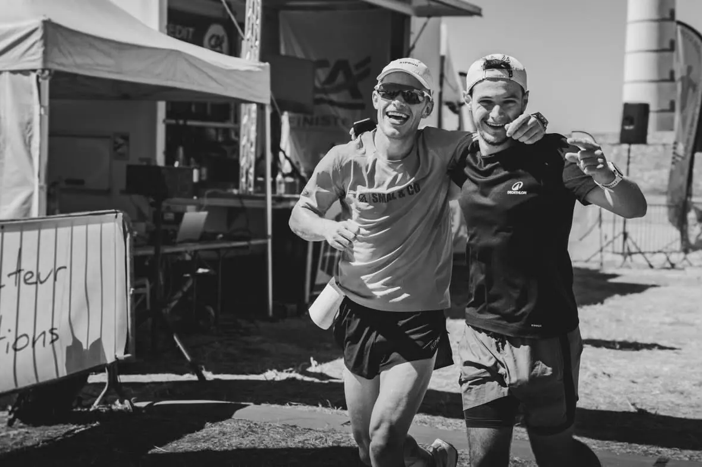
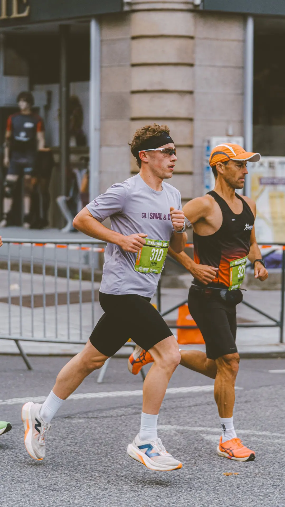
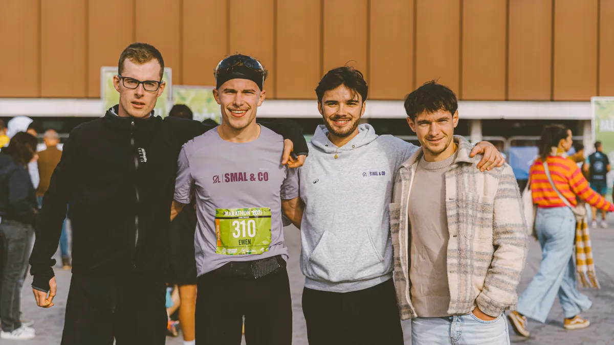

Pôle 02 · Team running
Running
Aux sentiers côtiers bretons. Une section running engagée sur les courses régionales dans un esprit d’émulation et de cohésion.
Nos missions
Courir ensemble, sous les mêmes couleurs.
- Création
- Mai 2026, Guerlédan
- Saison 2026
- 1 coureur engagé sous nos couleurs
- Saison 2027
- Création de la Team Running / Trail
Un pôle running qui se construit en parallèle du cyclisme, avec son propre suivi.
En 2026, un seul coureur a porté nos couleurs sur les courses. 2027 marque la vraie naissance du pôle : une Team complète, structurée et accompagnée.
Saison 2026 · Réalisations & sorties marquantes
Nos premiers kilomètres
Les résultats présentés ici datent de la saison 2026, avec un seul coureur engagé sous nos couleurs.
Guerlédan
Naissance de la section au Trail de Guerlédan, avec notre premier coureur engagé autour du lac.
Rennes
Un coureur SMAL & CO prend le départ dans les rues de Rennes.
Sorties communes
Des entraînements partagés entre membres, sur route comme sur les sentiers bretons.






Team Running / Trail
Une Team, pas un club.
Nous créons la Team Running / Trail SMAL & CO : un collectif indépendant, porté par l’association, rassemblant des coureurs passionnés et déterminés.
Notre ambition à travers ce format « Team » est de structurer un groupe solide, uni et compétitif. L’objectif est de fédérer nos athlètes pour être capables de nous aligner et de briller aussi bien sur des courses et trails régionaux que sur des événements d’envergure nationale.
2027 est notre saison fondatrice : un tremplin commun pour faire grandir la Team, imposer nos couleurs sur les sentiers, et développer l’association à travers des défis sportifs de tous niveaux.

Ambitions 2027
Ce que nous voulons faire.
Aucun de ces événements n’est encore programmé ni autorisé.
- Projet
Courir ensemble
Un calendrier de courses régionales et d’épreuves plus exigeantes disputées en tenue SMAL & CO, adapté au niveau de chacun.
- Projet
Testing de marques
Des sessions innovantes de test de matériels sportifs et de découverte d’équipements, ouvertes à notre communauté.
- Projet
Défis collectifs & objectifs Team
Se fixer ensemble des défis sportifs stimulants et humains, au-delà de l’aspect performance, pour souder la Team.
- Projet
Événements & sorties communautaires
Organisation de sorties collectives et d’événements ponctuels au cours de la saison, ouverts à toute la communauté.
- Projet
Raconter la saison
Création de contenus photo et vidéo (Reels, réseaux sociaux) pour mettre en lumière les courses, les athlètes et les partenaires.
Envie de nous soutenir ?
Suivez les coulisses du pôle running, échangez avec nous et accompagnez le développement de la Team sur nos réseaux officiels.